Warning: package 'tidyverse' was built under R version 4.3.3
Warning: package 'ggplot2' was built under R version 4.3.3
Warning: package 'tidyr' was built under R version 4.3.3
Warning: package 'purrr' was built under R version 4.3.3
Warning: package 'dplyr' was built under R version 4.3.3
Warning: package 'stringr' was built under R version 4.3.3
Warning: package 'forcats' was built under R version 4.3.3
Warning: package 'lubridate' was built under R version 4.3.3
── Attaching core tidyverse packages ──────────────────────── tidyverse 2.0.0 ──
✔ dplyr 1.1.4 ✔ readr 2.1.5
✔ forcats 1.0.0 ✔ stringr 1.5.1
✔ ggplot2 3.5.1 ✔ tibble 3.2.1
✔ lubridate 1.9.3 ✔ tidyr 1.3.1
✔ purrr 1.0.2
── Conflicts ────────────────────────────────────────── tidyverse_conflicts() ──
✖ dplyr::filter() masks stats::filter()
✖ dplyr::lag() masks stats::lag()
ℹ Use the conflicted package (<http://conflicted.r-lib.org/>) to force all conflicts to become errors
library(readr)
Task 1: Read in the Data and Modify
Reading in and merging student data files using local paths
d1=read.table("student-mat.csv",sep=";",header=TRUE)d2=read.table("student-por.csv",sep=";",header=TRUE)d3=merge(d1,d2,by=c("school","sex","age","address","famsize","Pstatus","Medu","Fedu","Mjob","Fjob","reason","nursery","internet"))print(nrow(d3)) # 382 students
[1] 382
head(d3)
school sex age address famsize Pstatus Medu Fedu Mjob Fjob reason
1 GP F 15 R GT3 T 1 1 at_home other home
2 GP F 15 R GT3 T 1 1 other other reputation
3 GP F 15 R GT3 T 2 2 at_home other reputation
4 GP F 15 R GT3 T 2 4 services health course
5 GP F 15 R GT3 T 3 3 services services reputation
6 GP F 15 R GT3 T 3 4 services health course
nursery internet guardian.x traveltime.x studytime.x failures.x schoolsup.x
1 yes yes mother 2 4 1 yes
2 no yes mother 1 2 2 yes
3 yes no mother 1 1 0 yes
4 yes yes mother 1 3 0 yes
5 yes yes other 2 3 2 no
6 yes yes mother 1 3 0 yes
famsup.x paid.x activities.x higher.x romantic.x famrel.x freetime.x goout.x
1 yes yes yes yes no 3 1 2
2 yes no no yes yes 3 3 4
3 yes yes yes yes no 4 3 1
4 yes yes yes yes no 4 3 2
5 yes yes yes yes yes 4 2 1
6 yes yes yes yes no 4 3 2
Dalc.x Walc.x health.x absences.x G1.x G2.x G3.x guardian.y traveltime.y
1 1 1 1 2 7 10 10 mother 2
2 2 4 5 2 8 6 5 mother 1
3 1 1 2 8 14 13 13 mother 1
4 1 1 5 2 10 9 8 mother 1
5 2 3 3 8 10 10 10 other 2
6 1 1 5 2 12 12 11 mother 1
studytime.y failures.y schoolsup.y famsup.y paid.y activities.y higher.y
1 4 0 yes yes yes yes yes
2 2 0 yes yes no no yes
3 1 0 yes yes no yes yes
4 3 0 yes yes no yes yes
5 3 0 no yes yes yes yes
6 3 0 yes yes no yes yes
romantic.y famrel.y freetime.y goout.y Dalc.y Walc.y health.y absences.y G1.y
1 no 3 1 2 1 1 1 4 13
2 yes 3 3 4 2 4 5 2 13
3 no 4 3 1 1 1 2 8 14
4 no 4 3 2 1 1 5 2 10
5 yes 4 2 1 2 3 3 2 13
6 no 4 3 2 1 1 5 2 11
G2.y G3.y
1 13 13
2 11 11
3 13 12
4 11 10
5 13 13
6 12 12
read in and combine the data using functions from the tidyverse
# Reading in datastudent_mat <-read_csv2("student-mat.csv")
ℹ Using "','" as decimal and "'.'" as grouping mark. Use `read_delim()` for more control.
Rows: 395 Columns: 33
── Column specification ────────────────────────────────────────────────────────
Delimiter: ";"
chr (17): school, sex, address, famsize, Pstatus, Mjob, Fjob, reason, guardi...
dbl (16): age, Medu, Fedu, traveltime, studytime, failures, famrel, freetime...
ℹ Use `spec()` to retrieve the full column specification for this data.
ℹ Specify the column types or set `show_col_types = FALSE` to quiet this message.
student_por <-read_csv2("student-por.csv")
ℹ Using "','" as decimal and "'.'" as grouping mark. Use `read_delim()` for more control.
Rows: 649 Columns: 33── Column specification ────────────────────────────────────────────────────────
Delimiter: ";"
chr (17): school, sex, address, famsize, Pstatus, Mjob, Fjob, reason, guardi...
dbl (16): age, Medu, Fedu, traveltime, studytime, failures, famrel, freetime...
ℹ Use `spec()` to retrieve the full column specification for this data.
ℹ Specify the column types or set `show_col_types = FALSE` to quiet this message.
# Inner join on same variables as Q1error_inner_join <-inner_join(student_mat, student_por,by =c("school", "sex", "age", "address", "famsize", "Pstatus", "Medu", "Fedu", "Mjob", "Fjob", "reason", "nursery", "internet"))
Warning in inner_join(student_mat, student_por, by = c("school", "sex", : Detected an unexpected many-to-many relationship between `x` and `y`.
ℹ Row 79 of `x` matches multiple rows in `y`.
ℹ Row 79 of `y` matches multiple rows in `x`.
ℹ If a many-to-many relationship is expected, set `relationship =
"many-to-many"` to silence this warning.
print(error_inner_join)
# A tibble: 382 × 53
school sex age address famsize Pstatus Medu Fedu Mjob Fjob reason
<chr> <chr> <dbl> <chr> <chr> <chr> <dbl> <dbl> <chr> <chr> <chr>
1 GP F 18 U GT3 A 4 4 at_home teach… course
2 GP F 17 U GT3 T 1 1 at_home other course
3 GP F 15 U LE3 T 1 1 at_home other other
4 GP F 15 U GT3 T 4 2 health servi… home
5 GP F 16 U GT3 T 3 3 other other home
6 GP M 16 U LE3 T 4 3 services other reput…
7 GP M 16 U LE3 T 2 2 other other home
8 GP F 17 U GT3 A 4 4 other teach… home
9 GP M 15 U LE3 A 3 2 services other home
10 GP M 15 U GT3 T 3 4 other other home
# ℹ 372 more rows
# ℹ 42 more variables: guardian.x <chr>, traveltime.x <dbl>, studytime.x <dbl>,
# failures.x <dbl>, schoolsup.x <chr>, famsup.x <chr>, paid.x <chr>,
# activities.x <chr>, nursery <chr>, higher.x <chr>, internet <chr>,
# romantic.x <chr>, famrel.x <dbl>, freetime.x <dbl>, goout.x <dbl>,
# Dalc.x <dbl>, Walc.x <dbl>, health.x <dbl>, absences.x <dbl>, G1.x <dbl>,
# G2.x <dbl>, G3.x <dbl>, guardian.y <chr>, traveltime.y <dbl>, …
Issue with inner join = more columns were returned then specified
Use an inner_join() on all variables other than G1, G2, G3, paid, and absences.
# A tibble: 320 × 28
school sex age address famsize Pstatus Medu Fedu Mjob Fjob reason
<chr> <chr> <dbl> <chr> <chr> <chr> <dbl> <dbl> <chr> <chr> <chr>
1 GP F 18 U GT3 A 4 4 at_home teach… course
2 GP F 17 U GT3 T 1 1 at_home other course
3 GP F 15 U GT3 T 4 2 health servi… home
4 GP F 16 U GT3 T 3 3 other other home
5 GP M 16 U LE3 T 4 3 services other reput…
6 GP M 16 U LE3 T 2 2 other other home
7 GP F 17 U GT3 A 4 4 other teach… home
8 GP M 15 U LE3 A 3 2 services other home
9 GP M 15 U GT3 T 3 4 other other home
10 GP F 15 U GT3 T 4 4 teacher health reput…
# ℹ 310 more rows
# ℹ 17 more variables: guardian <chr>, traveltime <dbl>, studytime <dbl>,
# failures <dbl>, schoolsup <chr>, famsup <chr>, activities <chr>,
# nursery <chr>, higher <chr>, internet <chr>, romantic <chr>, famrel <dbl>,
# freetime <dbl>, goout <dbl>, Dalc <dbl>, Walc <dbl>, health <dbl>
For the math data, Portuguese, and combined data, choose four categorical variables you are interested in and convert those into factor variables in each tibble.
Mutated factors = sex, guardian, activities, and internet.
What’s Interesting?: The amount of female students without internet access.
2b) Create a conditional two-way table using table(). Subset a three-way contingency table into a two-way table
three_way_tbl <-table(student_join$sex, student_join$guardian, student_join$internet, useNA ="always")# Subsetting three way table on access to internettwo_way_tbl_subset <- three_way_tbl[, , "yes"]print(two_way_tbl_subset)
father mother other <NA>
F 29 109 5 0
M 35 90 4 0
<NA> 0 0 0 0
What’s Interesting?: There are female students with guardian as “father” with internet access than male students.
Create a two-way contingency table using group_by() and summarize() from dplyr. Then use pivot_wider() to make the result look more like the output from table()
`summarise()` has grouped output by 'sex'. You can override using the `.groups`
argument.
print(cat_student_join_plot)
# A tibble: 2 × 4
# Groups: sex [2]
sex father mother other
<fct> <int> <int> <int>
1 F 37 132 5
2 M 37 105 4
What’s Interesting?: Number of female and male students with “father” as guardian is the same.
Create a stacked bar graph and a side-by-side bar graph. Give relevant x and y labels, and a title for the plots.
# Stacked bar graphg <-ggplot(data = student_join |>drop_na(sex), aes(x = sex, fill = internet))g +geom_bar() +labs(x ="Sex", title ="Internet Access by Sex") +scale_fill_discrete("Internet") +theme(plot.title =element_text(hjust =0.5)) #centering title
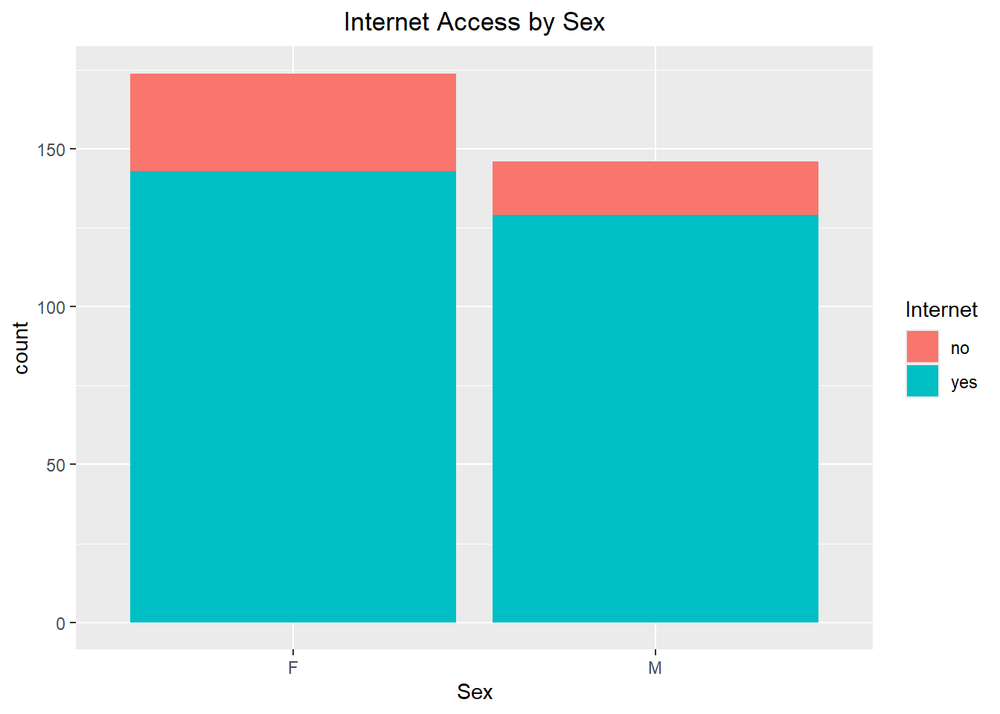
What’s Interesting?: More females then males.
# Side-by-side bar graphg +geom_bar(position ="dodge") +labs(x ="Sex", title ="Internet Access by Sex") +scale_fill_discrete("Internet") +theme(plot.title =element_text(hjust =0.5)) #centering title
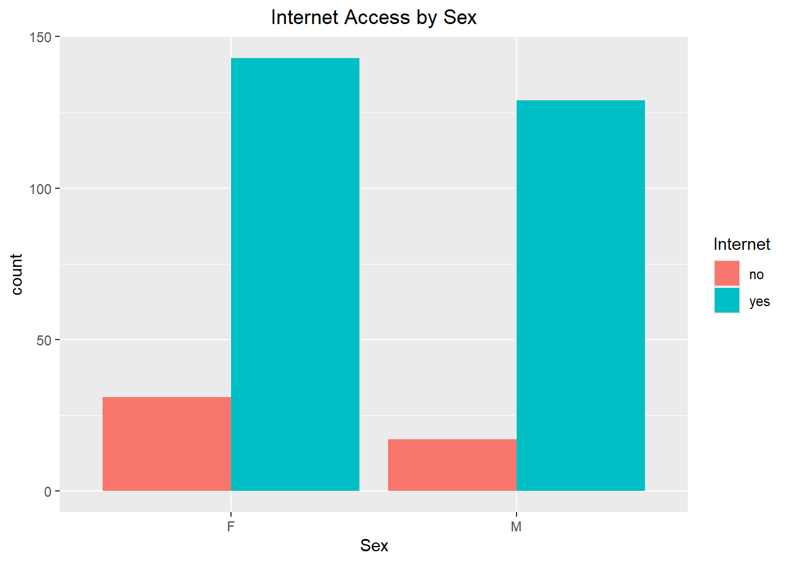
What’s Interesting?: More females then males, but side-by-side.
Numerical Variables
Reading in data with numerical variables
student_math <-read_csv2("student-mat.csv")
ℹ Using "','" as decimal and "'.'" as grouping mark. Use `read_delim()` for more control.
Rows: 395 Columns: 33
── Column specification ────────────────────────────────────────────────────────
Delimiter: ";"
chr (17): school, sex, address, famsize, Pstatus, Mjob, Fjob, reason, guardi...
dbl (16): age, Medu, Fedu, traveltime, studytime, failures, famrel, freetime...
ℹ Use `spec()` to retrieve the full column specification for this data.
ℹ Specify the column types or set `show_col_types = FALSE` to quiet this message.
student_port <-read_csv2("student-por.csv")
ℹ Using "','" as decimal and "'.'" as grouping mark. Use `read_delim()` for more control.
Rows: 649 Columns: 33── Column specification ────────────────────────────────────────────────────────
Delimiter: ";"
chr (17): school, sex, address, famsize, Pstatus, Mjob, Fjob, reason, guardi...
dbl (16): age, Medu, Fedu, traveltime, studytime, failures, famrel, freetime...
ℹ Use `spec()` to retrieve the full column specification for this data.
ℹ Specify the column types or set `show_col_types = FALSE` to quiet this message.
student_data <-inner_join(student_math, student_port, by =c("sex", "guardian", "internet", "age","absences", "G1", "G2", "G3"))# Keeping numerical variables and a few categorical variables student_data <- student_data |>select(sex, guardian, internet, age, absences, G1, G2, G3)print(student_data)
# A tibble: 10 × 8
sex guardian internet age absences G1 G2 G3
<chr> <chr> <chr> <dbl> <dbl> <dbl> <dbl> <dbl>
1 M mother yes 15 0 13 14 15
2 F mother yes 16 2 12 13 13
3 F father yes 15 0 10 10 10
4 M father yes 15 6 14 13 13
5 M mother no 16 0 7 0 0
6 F mother yes 17 0 8 8 9
7 F mother no 17 4 9 9 10
8 F mother yes 16 0 13 13 14
9 F mother yes 17 6 12 12 12
10 F mother no 18 2 10 9 10
What’s Interesting?: Some students have zero absences.
Find measures of center and spread for three of these variables (including at least one G3 variable)
# Measure of center and spreadstudent_data |>select(age, absences, G3) |>drop_na(age, absences, G3) |>summarize(across(c(age, absences, G3), .fns =list("mean"= mean, "median"= median, "var"= var, "sd"= sd, "IQR"= IQR), .names ="{.fn}_{.col}"))
What’s Interesting?: absences is positively correlated with age.
Create a histogram, kernel density plot, and boxplot for two of the numeric variables across one of the categorical variables
# Kernel Density 1: G1 across sexKD1 <-ggplot(student_data |>drop_na(G1, sex), aes(x = G1))KD1 +geom_density(alpha =0.4, aes(fill = sex)) +labs(x ="First Period Grade", title ="Kernel Density: First Period Grade by Sex") +scale_fill_discrete("Sex") +theme(plot.title =element_text(hjust =0.5)) #centering title
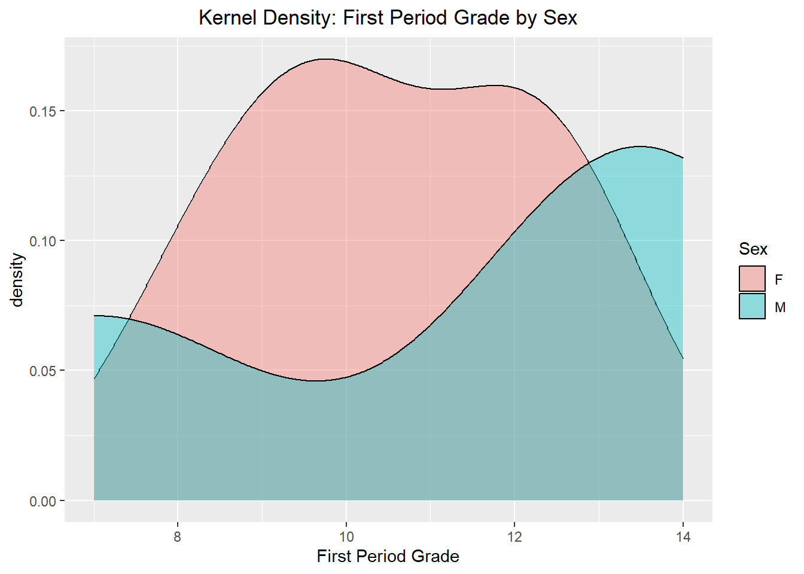
What’s Interesting?: The difference in students in first period scoring 10 by sex.
# Kernel Density 2: G2 across sexKD2 <-ggplot(student_data |>drop_na(G2, sex), aes(x = G2))KD2 +geom_density(kernel ="gaussian", alpha =0.4, aes(fill = sex)) +labs(x ="Second Period Grade", title ="Kernel Density: Second Period Grade by Sex") +scale_fill_discrete("Sex") +theme(plot.title =element_text(hjust =0.5)) #centering title
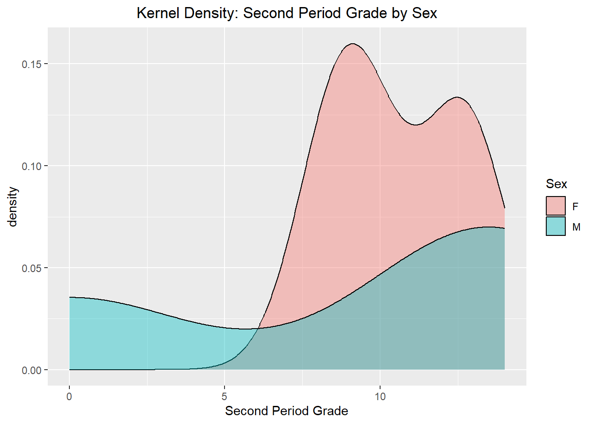
What’s Interesting?: The difference in students in second period scoring ~8.5 by sex.
# Histogram 1: G1 across sexH1 <-ggplot(student_data |>drop_na(G1, sex), aes(x = G1))H1 +geom_histogram(binwidth =0.5, alpha =1, aes(fill = sex)) +labs(x ="First Period Grade", title ="Histogram: First Period Grade by Sex") +scale_fill_discrete("Sex") +theme(plot.title =element_text(hjust =0.5)) #centering title
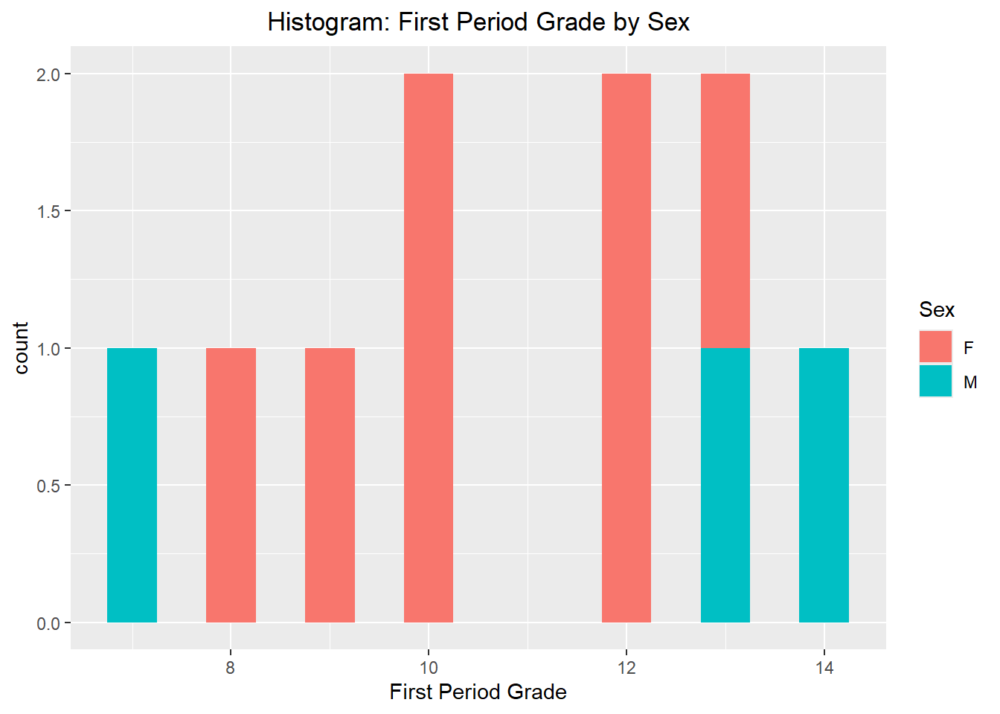
What’s Interesting?: The only score to be achieved by both sexes was thirteen.
# Histogram 2: G2 across sexH2 <-ggplot(student_data |>drop_na(G2, sex), aes(x = G2))H2 +geom_histogram(binwidth =0.75, alpha =1, aes(fill = sex)) +labs(x ="Second Period Grade", title ="Histogram: Second Period Grade by Sex") +scale_fill_discrete("Sex") +theme(plot.title =element_text(hjust =0.5)) #centering title
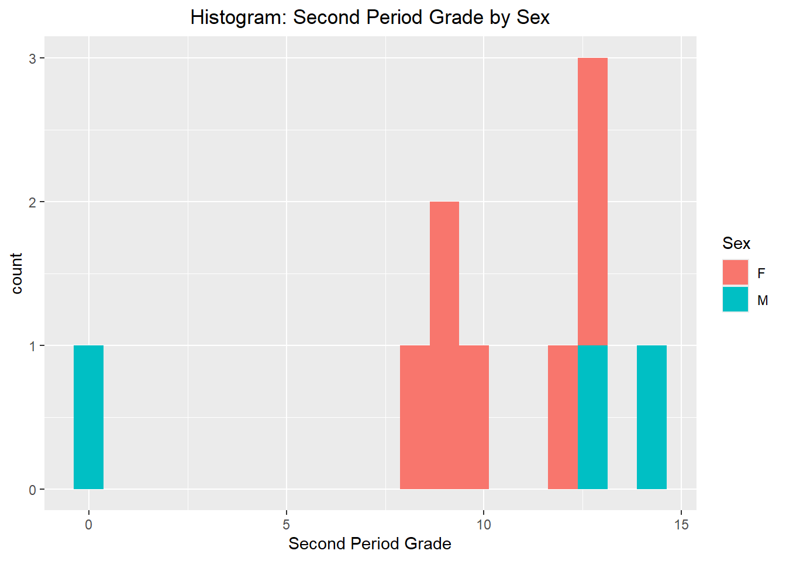
What’s Interesting?: Only one male scored a zero in second period.
# Box Plot 1: G1 across sexbp1 <-ggplot(student_data |>drop_na(G1, sex))bp1 +geom_boxplot(aes(x = G1, y = sex, fill = sex)) +labs(x ="First Period Grade", title ="Box Plot: First Period Grade by Sex") +scale_fill_discrete("Sex") +theme(plot.title =element_text(hjust =0.5)) #centering title
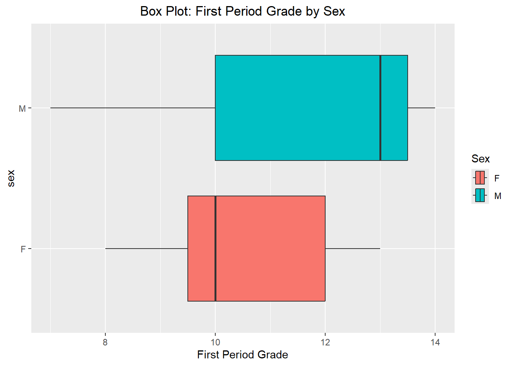
What’s Interesting?: The difference in error bars between the sexes.
# Box Plot 2: G2 across sexbp1 <-ggplot(student_data |>drop_na(G2, sex))bp1 +geom_boxplot(aes(x = G2, y = sex, fill = sex)) +labs(x ="Second Period Grade", title ="Box Plot: Second Period Grade by Sex") +scale_fill_discrete("Sex") +theme(plot.title =element_text(hjust =0.5)) #centering title
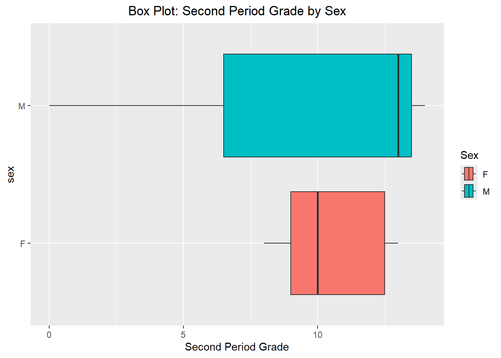
What’s Interesting?: In the second period, male score are spread across the board while female scores are concentrated around ten.
Create two scatterplots relating a G3 variable to other numeric variables (put G3 on the y-axis).
# Scatter Plot 1: G3 and age across sexsp1 <-ggplot(student_data |>drop_na(G3, age), aes(x = age, y = G3, color = sex))sp1 +geom_point() +labs(x ="Student Age", y ="Third Period Grades", title ="Scatter Plot: Third Period Grade by Age") +theme(plot.title =element_text(hjust =0.5)) #centering title
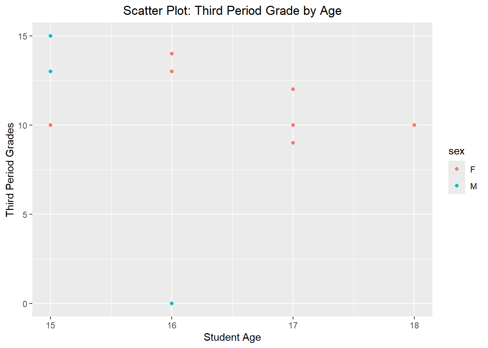
What’s Interesting?: A single 16 year old male scored a zero in third period.
# Scatter Plot 2: G3 and absences across sexsp1 <-ggplot(student_data |>drop_na(G3, absences), aes(x = absences, y = G3, color = sex))sp1 +geom_point() +labs(x ="Absences", y ="Third Period Grades", title ="Scatter Plot: Third Period Grade by Absences") +theme(plot.title =element_text(hjust =0.5)) #centering title
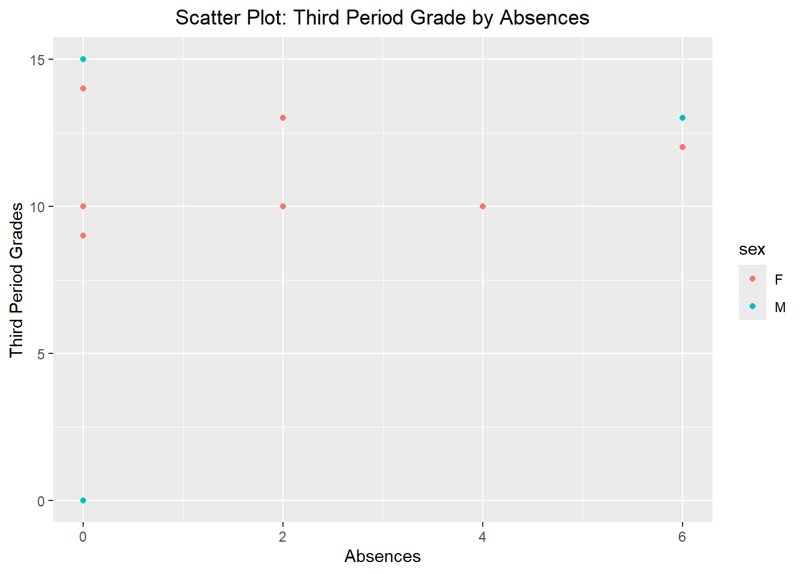
What’s Interesting?: More females then males were absent.
Repeat the scatter plot step but use faceting to obtain graphs at each setting of another categorical variable.
# Scatter Plot with faceting: G3 and absences across internet# Setting up labels for facet plotscustom_labels <-c("yes"="Internet Access: Yes", "no"="Internet Access: No")sp1 <-ggplot(student_data |>drop_na(G3, absences), aes(x = absences, y = G3, color = internet))sp1 +geom_point() +labs(x ="Absences", y ="Third Period Grades", title ="Scatter Plot: Third Period Grade by Absences, Sex, and Internet Access") +theme(plot.title =element_text(hjust =0.5)) +facet_wrap(~ internet, labeller =as_labeller(custom_labels))
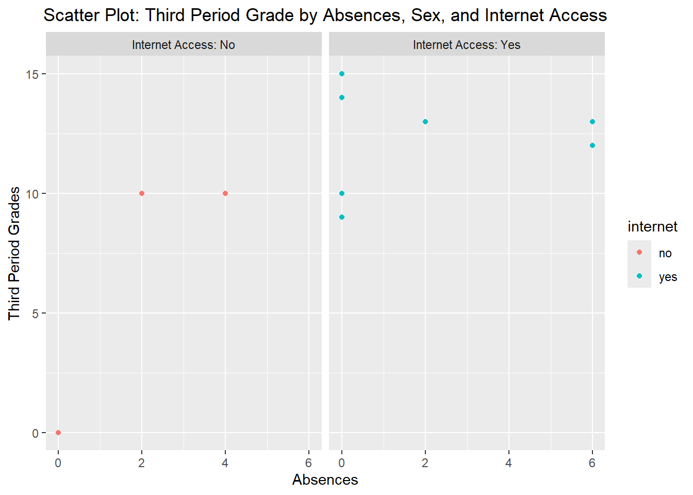
What’s Interesting?: In the third period, there are more males then females with internet access.
Repeat the scatter plot step but use faceting to obtain graphs at each combination of two categorical variables.
# Scatter Plot with faceting: G3 and absences across sex internet# Setting up labels for facet plotscustom_labels <-c("yes"="Internet Access: Yes", "no"="Internet Access: No")sp1 <-ggplot(student_data |>drop_na(G3, absences), aes(x = absences, y = G3, color = sex))sp1 +geom_point() +labs(x ="Absences", y ="Third Period Grades", title ="Scatter Plot: Third Period Grade by Absences, Sex, and Internet Access") +theme(plot.title =element_text(hjust =0.5)) +facet_wrap(~ internet, labeller =as_labeller(custom_labels))
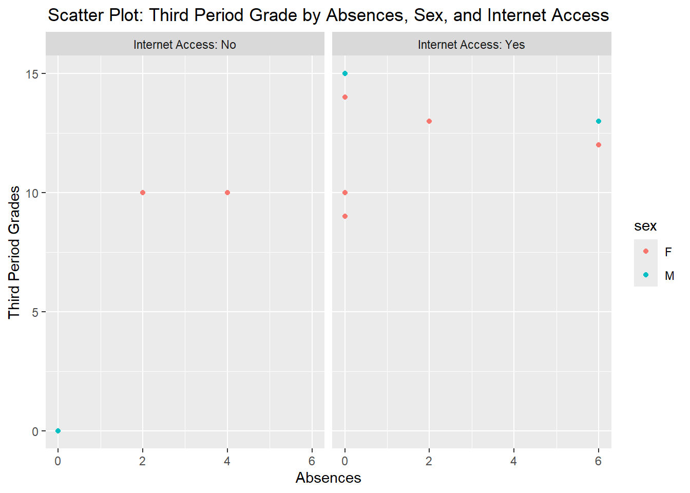
What’s Interesting?: In the third period, the proportion of student absences is the same regarding internet access.